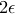

Pyxplot is a command-line graphing package, which, for ease of use, has an interface based heavily upon that of gnuplot – perhaps UNIX’s most widely-used plotting package. Despite the shared interface, however, Pyxplot is intended to significantly improve upon the quality of gnuplot’s output, producing publication-quality figures. The command-line interface has also been extended, providing a wealth of new features, and short-cuts for some operations which were felt to be excessively cumbersome in the original.
The motivation behind Pyxplot’s creation was the apparent lack of a free plotting package which combined both high-quality output and a simple interface. Some – pgplot for one – provided very attractive output, but required a program to be written each time a plot was to be produced – a potentially time consuming task. Others, gnuplot being the prime example, were quick and simple to use, but produced less attractive results.
Pyxplot attempts to fill that gap, offering the best of both worlds. Though the interface is based upon that of gnuplot, text is now rendered with all of the beauty and flexibility of the LaTeX typesetting environment; the “multiplot” environment is made massively more flexible, making it easy to produce galleries of plots; and the range of possible output formats is extended – to name but a few of the enhancements. A number of examples of the results of which Pyxplot is capable can be seen on the project website†http://www.pyxplot.org.uk/.
As well as the ease of use and flexibility of gnuplot’s command-line interface – it can be used either interactively, read a list of commands from a file, or receive instructions through a UNIX pipe from another process – I believe it to bring another distinct advantage. It insists upon data being written to a datafile on disk before being plotted. Packages which allow, or more often require, plotting to be done from within a programming language can encourage the calculation of data and its plotting to occur in the same program. I believe this to be a dangerous temptation, as the storage of raw datapoints to disk can then often be seen as a secondary priority. Months later, when the need arises to replot the same data in a different form, or to compare it with newer data, remembering how to use a hurriedly written program can prove tricky, but remembering how to plot a simple datafile less so.
The similarity of the interface to that of gnuplot is such that simple scripts written for gnuplot should work with Pyxplot with minimal modification; gnuplot users should be able to get started very quickly. However, as Pyxplot remains work in progress, it supports only a subset of the functionality and configurability of gnuplot, and some features may be found to be missing. These will be discussed further in Section 2.11. A description of those features which have been added to the interface can be found in Chapter 3.
A brief overview of gnuplot’s interface is provided for novice users in Chapter 2. However, the attention of past gnuplot users is drawn to one of the key changes to the interface – namely that all textual labels on plots are now printed using the LaTeX typesetting environment. This does unfortunately introduce some incompatibility with the original, since some strings which were valid before are no longer valid (see Section 2.3 for more details). For example:
set xlabel 'x^2'
would have been valid in gnuplot, but now needs to be written in LaTeX mathmode as:
set xlabel '$x^2$'
It is the view of the author, however, that the nuisance of this incompatibility is far outweighed by the power that LaTeX brings. For users with no prior knowledge of LaTeX the author recommends Tobias Oetiker’s excellent introduction, The Not So Short Guide to LaTeX†Download from:
http://www.ctan.org/tex-archive/info/lshort/english/lshort.pdf.